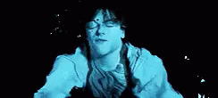

<clr-modal [(clrModalOpen)]="opened" (clrModalOpenChange)="onClose()"  [clrModalStaticBackdrop]="false"> <!-- cant have [clrModalClosable]="false" prop -->
<!-- <clr-modal [(clrModalOpen)]="opened" (clrModalOpenChange)="onClose()" [clrModalClosable]="false" [clrModalStaticBackdrop]="false"> clrModalStaticBackdrop set to false should make the modal disapear when someone clicks outside modal -->
    <h3 class="modal-title">You {{predictionResult.result}} with a chance of {{predictionResult.chance}}</h3>
    <div class="modal-body">
        
        
    </div>
    <div class="modal-footer">
        <button type="button" class="btn btn-primary" (click)="onClose()">Close</button> <!-- reset the inputs to undefined -->
    </div>
</clr-modal>
